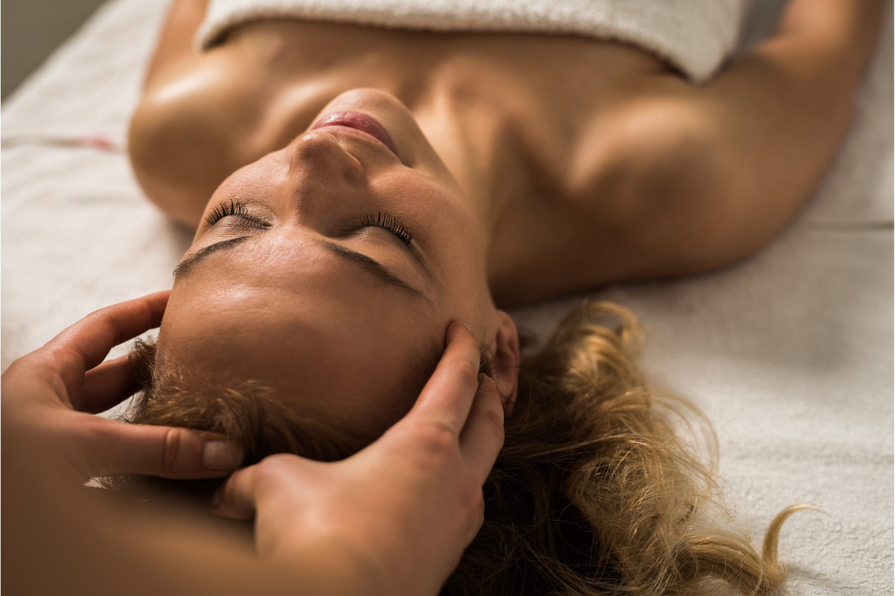
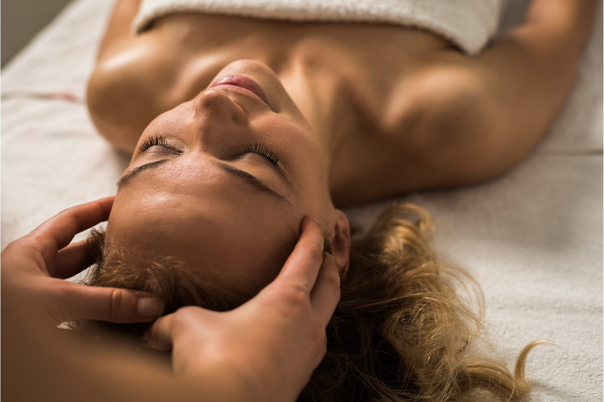
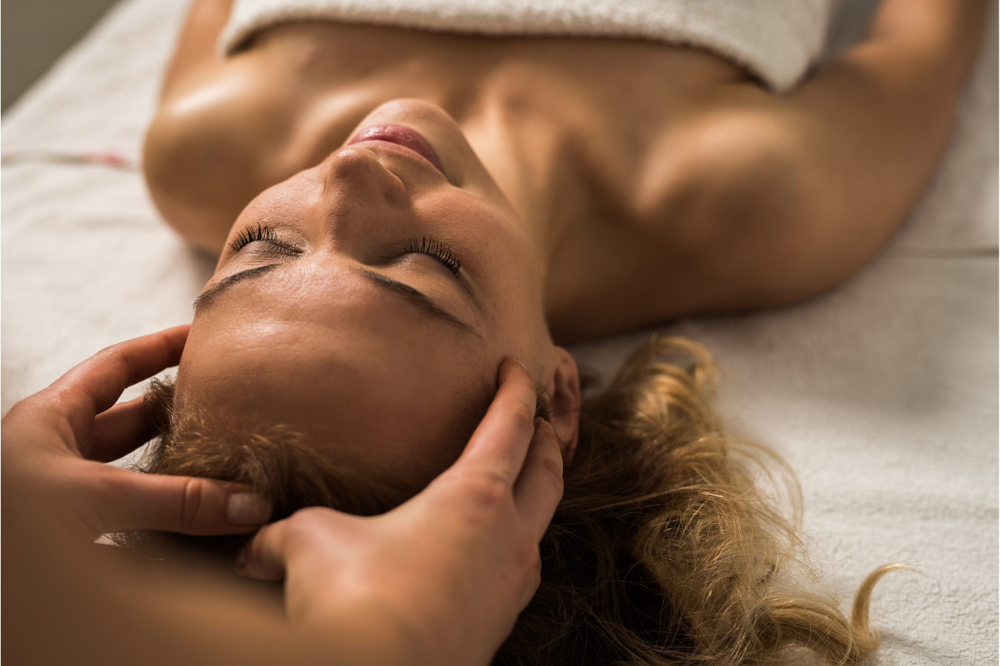

Bioconexão, alinhamento de chakras, auto conhecimento e desenvolvimento pessoal!
Faça uma pausa na correria do dia a dia e venha buscar o caminho do seu EU verdadeiro. Aprenda técnicas milenares de auto conhecimento e descubra seu veradeiro propósito nessa vida!
Sou formado em terapia de Bioconexão método Heck. Cursei a formação de 2013 a 2015 com o Mestre Leandro Heck Gemeo, PHD em medicina oriental e desenvolvedor do método.
Durante o período de formação como terapeuta de Bioconexão aprendi diversas técnicas de desenvolvimento pessoal e auto conhecimento, alinhamento dos chakras(com e sem uso de acupuntura), projeção mental, meditação conduzida.
Ainda com o Mestre Leandro fiz o curso de massagem nativa da Polinésia Maori. Um método bem diferente das massagens mais comuns pra nós aqui no Ocidente. Essa técnica envolve ritmo, calor e vitalidade. Justamente para atingir seu objetivo que é de tonificar a energia corporal ativando a circulação sanguínea e trazendo mais diposição e energia para quem a recebe.
Atualmente atendo com sessãoes de Bioconexão, alinhamento de chakras, o qual tenho também um curso prático disponível com suporte audiovisual, e ofereço também sessões de meditação conduzida para expansão de consciência e autoconhecimento profundo!
Todas essas práticas são voltadas ao auto conhecimento e a busca do seu EU interior. Descubra seu verdadeiro propósito nessa existência por meio do auto conhecimento com práticas ativas e contemplação da sua própria experiência.
Deixe eu te ajudar a expandir sua consciência?

Imersão terapêutca completa!
Existem muitos caminhos para se alcançar um mesmo objetivo. Aqui vou te oferecer várias possibilidades porém todas com o mesmo destino: VOCÊ!
Bioconexão
Método de imersão ao subconsciente desenvolvido pelo Mestre Leandro Heck Gemeo, PHD em medicina oriental, Biometafísica facial e criador do método Heck.
Essa prática busca acessar informações que estão adormecidas no subconsciente e trazê-las à luz da consciência. Pemitindo que sua mente esteja cada vez mais atenta ao presente e focada no seu verdadeiro propósito de vida!
Alinhamento de Chakras
Essa ferramenta poderosa permite equilibrar as energias no seu corpo em busca de harmonia. Cada chakra é responsável por uma parte da sua conexão com o mundo, seja física ou astral e/ou espiritual. Trabalhar essa energias para que sejam mantidas em equilíbrio permite que todo o seu portencial interno aflore e trabalhe a seu favor em concordância com as energias do Universo!
Meditação conduzida
Essa prática é muito poderos e permite a quem pratica uma jornada profunda de autoconhecimento, acessando seu subconsciente por meio estíumulos e orientações conduzidas por mim. Não é uma busca induzida e sim uma condução na qual eu apenas oriento a pessia praticante rumo ao seu próprio caminho de descobertas. Eu apenas lhe mostrarei a porta, você precisará abri-la e decidir entrar!
Agende seu atendimento
Envie um email pra mim com seus dados de cadastro e preferência de horários para agendarmos uma sessão. Estou te esperando!
 
